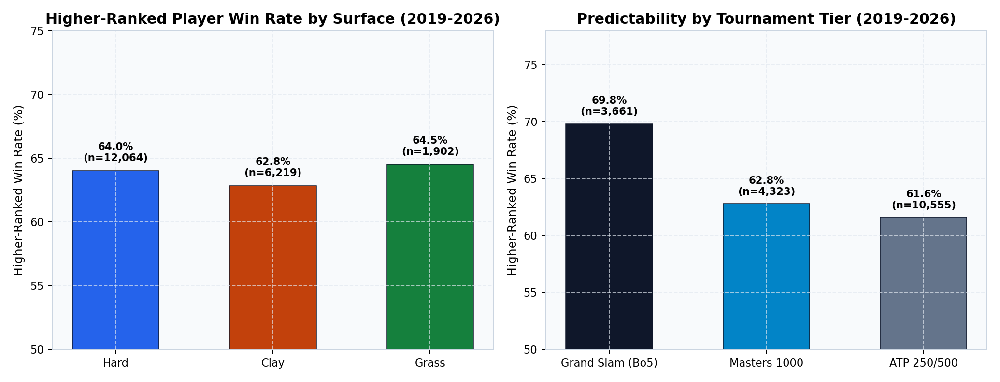
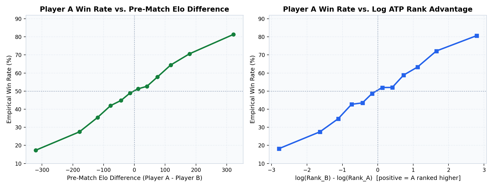
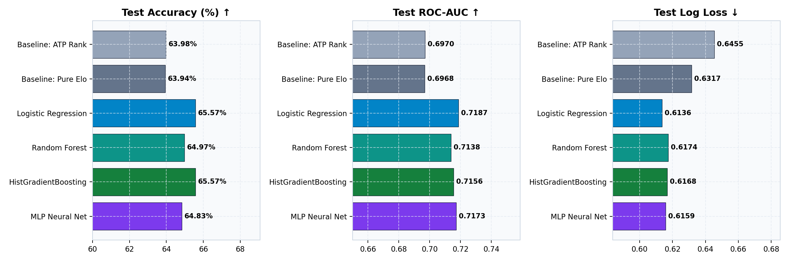
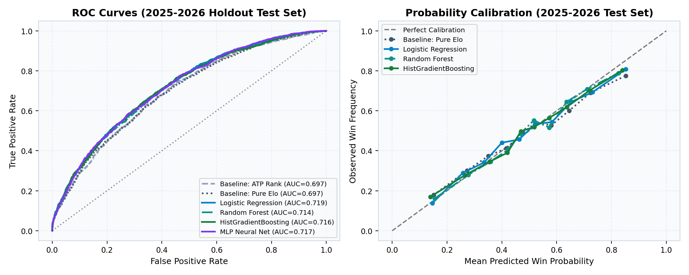
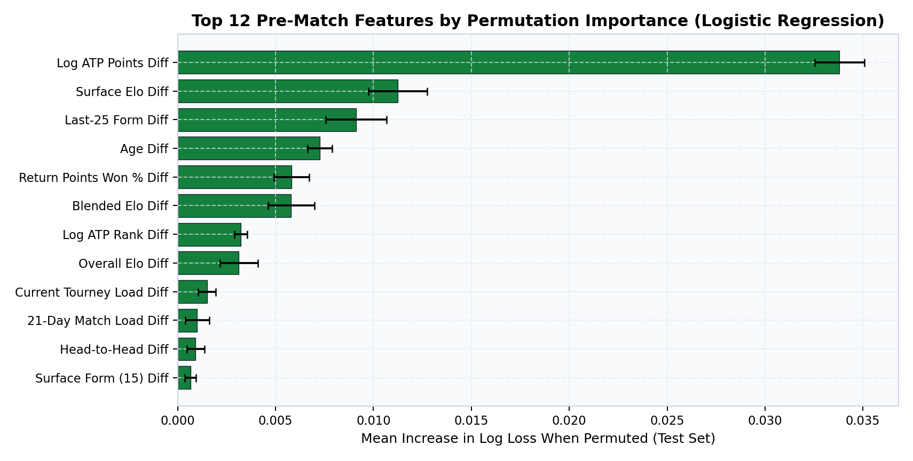
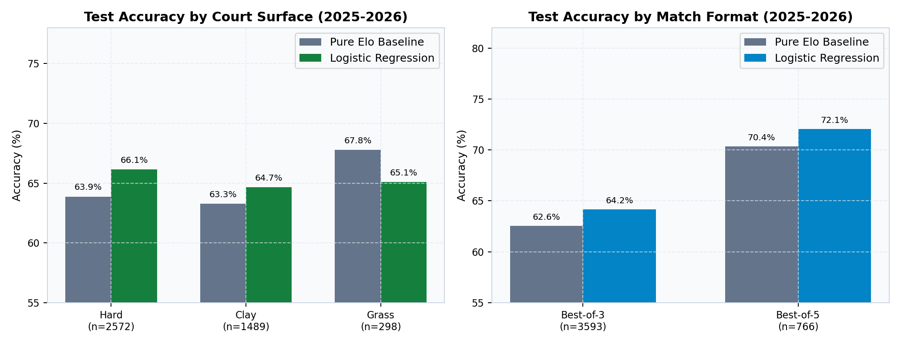

Team & Repository Overview
This research blog documents an end-to-end, reproducible machine learning pipeline for forecasting men's professional singles tennis matches prior to first serve. Replace the placeholder member entries below with your team's details before final submission.
I. Introduction
1.1 Background & Motivation
Tennis is uniquely well-suited for predictive modeling: every match produces a binary winner without draws, and players compete year-round across distinct surfaces (hard, clay, and grass) under different match formats (Best-of-3 vs. Best-of-5). Yet naive models frequently overestimate their true predictive power by leaking future information—either by splitting matches randomly across years or by including post-match box-score statistics (such as aces or break points converted) as inputs.
Our goal in this project is to build a strictly leakage-free pre-match prediction system using only historical information available before a match begins, and without relying on external bookmaker odds.
1.2 Research Questions
- Beyond Official Rankings: How much predictive lift do dynamic Elo ratings (overall + surface-specific) and rolling serve/return metrics add over a static ATP ranking baseline?
- Linear vs. Non-Linear Models: Do tree ensembles (Random Forest, HistGradientBoosting) or neural networks outperform well-regularized Logistic Regression on symmetric pairwise tennis features?
- Surface & Format Dynamics: How strongly do court surface (Hard, Clay, Grass) and match length (Best-of-3 vs. Best-of-5) alter predictability and upset rates?
II. Dataset & Exploratory Data Analysis
2.1 Data Source & Cleaning
We use nine seasons of ATP Tour main-draw singles match records spanning 2018 through 2026 (sourced from the archival ATP match dataset matching Jeff Sackmann's schema). Across the raw files, we observe 23,270 scheduled matches. Because unplayed walkovers (W/O) and pre-match defaults (DEF) contain no court performance statistics and reflect withdrawals rather than match play, we filter out 160 walkovers/defaults, leaving 23,110 played matches covering 1,080 unique ATP players.
- Chronological Ordering: Matches are sorted strictly by tournament start date, tournament ID, round hierarchy (
ER < RR < R128 < R64 < R32 < R16 < QF < SF < BR < F), and match number. - Zero Post-Match Leakage: Box-score stats (aces, double faults, 1st serve %, return points won) from match t are never used to predict match t; they only update a player's rolling history for match t+1 onward.
2.2 Exploratory Findings: Surface & Match Format Effects
Across 2019–2026, official ATP rankings alone exhibit clear structural patterns. Higher-ranked players win 64.51% of matches on Grass (n=1,902) and 64.03% on Hard courts (n=12,064), compared to 62.82% on Clay (n=6,219). Even sharper is the gap across tournament tiers: in Best-of-5 Grand Slams (n=3,661), the higher-ranked player wins 69.82% of the time, versus 62.80% in Masters 1000 events and 61.61% in ATP 250/500 events—consistent with the law of large numbers over longer matches.


III. Leakage-Free Methodology & Feature Engineering
3.1 Symmetrized Pairwise Framing
Raw ATP records list columns as winner_* and loser_*. Feeding those directly into a classifier would leak the label. For each match, we randomly assign the winner to either Player A (target = 1) or Player B (target = 0) with equal 50% probability (seeded for exact reproducibility), and express all player features as differences: Feature(A) − Feature(B).
3.2 Chronological Pre-Match Feature Groups (28 Features)
Dynamic Elo & Rankings
- Overall Elo diff (tier-weighted K: 36 Slam, 32 Masters, 28 Tour)
- Surface-specific Elo diff (Hard, Clay, Grass; K=30)
- Blended Elo (60% overall + 40% surface)
- Pre-tournament log ATP rank & log ATP points diff
Rolling Form & Rivalries
- Smoothed win rates over last 10 & 25 matches
- Surface-specific win rate over last 15 matches
- Career smoothed win rate & tour experience (log matches)
- Prior Head-to-Head (H2H) win differential
Serve & Return Efficiency
- 15-match rolling ace rate & double-fault rate
- 1st serve in %, 1st serve won %, 2nd serve won %
- Break points saved % (Laplace-smoothed prior)
- Return points won % against opponents
Workload & Match Context
- Matches already played in current tournament
- 21-day recent match workload
- Age diff, height diff, left-handed matchup flag
- Surface flags (Clay, Grass), Best-of-5, Slam/Masters
3.3 Strict Temporal Evaluation Protocol
To mirror real-world forecasting, we never shuffle across years. Season 2018 serves purely as a cold-start warm-up to stabilize Elo ratings and rolling statistics before any training sample is recorded.
IV. Model Evaluation & Analysis
4.1 Overall Benchmark Comparison
We compare four ML families tuned on 2024 validation log loss (and refitted on 2019–2024 before final evaluation) against two transparent baselines: an ATP Rank logistic baseline and a Pure Elo probability baseline (1 / (1 + 10^(-ΔElo/400))). Use the toggle below to switch between the 2025–2026 Holdout Test Set and the 2024 Validation Set.
| Model | Family / Config | Accuracy ↑ | ROC-AUC ↑ | Log Loss ↓ | Brier Score ↓ |
|---|

4.2 Probability Calibration & ROC Curves
In sports forecasting, raw accuracy only tells half the story—well-calibrated probabilities matter just as much. Logistic Regression achieves the lowest Brier Score (0.2134) and tracks the diagonal calibration line closely from 15% underdogs up to 85% heavy favorites. Notably, HistGradientBoosting ties Logistic Regression in classification accuracy (65.57%) but has slightly higher log loss (0.6168 vs. 0.6136), reflecting mild overconfidence in tree leaves on noisy upsets.

4.3 What Drives Predictions? (Permutation Importance)
Permuting features on the holdout test set reveals that the model relies on a complementary blend of long-term ranking strength (Log ATP Points Diff), surface-specific form (Surface Elo Diff), medium-term momentum (Last-25 Form Diff), physical age curve (Age Diff), and return game quality (Return Points Won % Diff).

4.4 Surface & Match Format Breakdown

V. Real Holdout Case Studies: 2025–2026 Grand Slam Finals
To inspect model behavior on high-stakes matches, below are the untouched pre-match predictions from our Logistic Regression model across six Grand Slam finals in the 2025–2026 test set. Notice how the model thrives when ranking/surface gaps are clear (e.g., Sinner vs. Zverev at AO 2025, Zverev vs. Cobolli at RG 2026) and flags elite Top-2 rivalries like Sinner vs. Alcaraz as near coin flips (50.0%–58.1%).
| Tournament | Surface | Matchup (Ranks) | Actual Score | Model Pick (Prob.) | Outcome |
|---|---|---|---|---|---|
| 2025 Australian Open | Hard | Jannik Sinner (#1) def. Alexander Zverev (#2) | 6-3 7-6(4) 6-3 | Jannik Sinner (69.66%) | Correct |
| 2025 Roland Garros | Clay | Carlos Alcaraz (#2) def. Jannik Sinner (#1) | 4-6 6-7(4) 6-4 7-6(3) 7-6(2) | Carlos Alcaraz (50.02%) | Correct |
| 2025 Wimbledon | Grass | Jannik Sinner (#1) def. Carlos Alcaraz (#2) | 4-6 6-4 6-4 6-4 | Carlos Alcaraz (54.84%) | Missed |
| 2025 US Open | Hard | Carlos Alcaraz (#2) def. Jannik Sinner (#1) | 6-2 3-6 6-1 6-4 | Jannik Sinner (58.07%) | Missed |
| 2026 Australian Open | Hard | Carlos Alcaraz (#1) def. Novak Djokovic (#4) | 2-6 6-2 6-3 7-5 | Carlos Alcaraz (74.62%) | Correct |
| 2026 Roland Garros | Clay | Alexander Zverev (#3) def. Flavio Cobolli (#14) | 6-1 4-6 6-4 6-7(5) 6-1 | Alexander Zverev (78.88%) | Correct |
VI. Related Work, Limitations & Reproducibility
6.1 Context in Sports Analytics
Prior tennis prediction literature (including Kovalchik's benchmark comparisons of ATP rating systems and Sackmann-based Elo/ML pipelines) consistently finds that well-calibrated Elo and logistic models set a strong accuracy ceiling around 65%–68% when betting market odds are excluded, because bookmaker lines implicitly price late-breaking injury news and matchup narratives unavailable in historical box scores.
6.2 Key Limitations
- Unobserved Injuries & Fatigue Context: Pre-match box scores cannot capture minor knocks, illness, or motivation fluctuations right before a match.
- Short Grass Season Sample: Because Grass accounts for only ~8% of tour matches (298 test matches in 2025–2026), surface-specific serve/return rolling stats have fewer recent observations entering Wimbledon.
- No Betting-Market Signal: Intentionally omitted to test pure performance fundamentals; adding closing odds would raise accuracy further but shifts the task from sports modeling to market distillation.
6.3 Reproducing the Results Locally
git clone https://github.com/Popi689/Predicting-Tennis-Match-Outcomes-Using-Machine-Learning.git
cd Predicting-Tennis-Match-Outcomes-Using-Machine-Learning
pip install -r requirements.txt
python src/run_pipeline.py